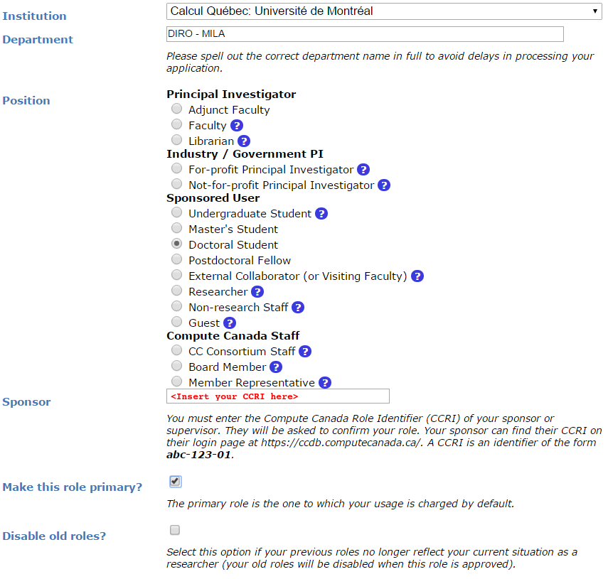

Computational resources outside of Mila
This section seeks to provide insights and information on computational resources outside the Mila cluster itself.
Digital Research Alliance of Canada Clusters
The clusters named Fir, Nibi, Narval, Rorqual and Trillium are clusters provided by the Digital Research Alliance of Canada organisation (the Alliance). For Mila researchers, these clusters are to be used for larger experiments having many jobs, multi-node computation and/or multi-GPU jobs as well as long running jobs.
Note
If you use DRAC resources for your research, please remember to acknowledge their use in your papers
Note
Compute Canada ceased its operational responsibilities for supporting Canada’s national advanced research computing (ARC) platform on March 31, 2022. The services will be supported by the new Digital Research Alliance of Canada.
Clusters of the Alliance are shared with researchers across the country, in part through a system of allocations. Allocations are given by the Alliance to selected research groups to ensure a steady availability of computational resources throughout the year. From the Alliance’s documentation: An allocation is an amount of resources that a research group can target for use for a period of time, usually a year.
Current Allocation Description
Depending on your supervisor’s affiliations, you will have access to different
allocations. Almost all students at Mila supervised by “core” professors
should have access to the rrg-bengioy-ad allocation described below, but
it is not the only one; Each supervisor also has a def-profname allocation.
Your supervisor is your first point of contact in knowing which allocations you
should have access to.
The table below provides information on the allocation for rrg-bengioy-ad
for the period which spans from July 2025 to Summer 2026.
Cluster |
CPUs |
GPUs |
|||||
# |
account |
Model |
RGUs allocated |
# GPU equiv |
SLURM type specifier |
account |
|
Fir |
193 |
rrg-bengioy-ad |
H100-80G |
2000 |
165 |
|
rrg-bengioy-ad |
Rorqual |
873 |
rrg-bengioy-ad |
H100-80G |
1500 |
123 |
|
rrg-bengioy-ad |
Nibi |
0 |
rrg-bengioy-ad |
H100-80G |
1000 |
82 |
|
rrg-bengioy-ad |
On DRAC clusters where Mila has no allocated resources under rrg-bengioy-ad
this year, users can still use the default allocation associated with their
supervisor, so long as the supervisor adds them to it on the DRAC web site.
Every university professor in Canada gets a default allocation, and they can add
their collaborators to it. The default accounts are of the form
def-<yourprofname>-gpu and def-<yourprofname>-cpu. Management of a
professor’s default DRAC allocation is their personal responsibility, is beyond
the control of Mila, and we are unable to provide support for such management.
Note
An allocation is not a maximal amount of resources that can be used simultaneously, it is a weighting factor of the workload manager to balance jobs. For instance, even though we are allocated 408 GPU-years across all clusters, we can use more or less than 408 GPUs simultaneously depending on the history of usage from our group and other groups using the cluster at a given period of time. Please see the Alliance’s documentation for more information on how allocations and resource scheduling are configured for these installations.
Account Creation
To access the Alliance clusters you have to first create an account at https://ccdb.alliancecan.ca. Use a password with at least 8 characters, mixed case letters, digits and special characters. Later you will be asked to create another password with those rules, and it’s really convenient that the two password are the same.
Then, you have to apply for a role at
https://ccdb.alliancecan.ca/me/add_role, which basically means telling the
Alliance that you are part of the lab so they know which cluster you can have
access to, and track your usage.
You will be asked for the CCRI (See screenshot below). Please reach out to your sponsor to get the CCRI.

You will need to wait for your sponsor to accept before being able to login to the Alliance clusters.
You should apply to a role using this form for each allocation you can have access to. If, for instance,
your supervisor is member of the rrg-bengioy-ad allocation, you should apply using Yoshua Bengio’s CCRI, and
you should apply separately using your supervisor’s CCRI to have access to def-<yoursupervisor>. Ask your supervisor
to share these CCRI with you.
Account Renewal
All user accounts (Sponsor & Sponsored) have to be renewed annually in order to keep up-to-date information on active accounts and to deactivate unused accounts.
To find out how to renew your account or for any other question regarding DRAC’s accounts renewal, please head over to their FAQ.
If the FAQ is of no help, you can contact DRAC renewal support team at
renewals@tech.alliancecan.ca or the general support team at
support@tech.alliancecan.ca.
Clusters
- Fir:
(Digital Research Alliance of Canada doc)
The successor to the legacy Cedar cluster. Retains its filesystem. Equipped with H100s.
- Nibi:
(Digital Research Alliance of Canada doc)
The successor to the legacy Graham cluster. Retains its filesystem. Equipped with H100s.
- Rorqual:
(Digital Research Alliance of Canada doc)
The successor to the legacy Beluga cluster. No internet access on compute nodes. Equipped with H100s.
- Trillium:
(Digital Research Alliance of Canada doc)
The successor to the legacy Niagara cluster. It is principally but not exclusively a CPU cluster. This cluster is not recommended in general. Compute resources in Trillium are not assigned to jobs on a per-CPU, but on a per-node basis. Equipped with H100s.
- Narval:
(Digital Research Alliance of Canada doc)
For some students, Narval might be a good choice if they have already set up there. Narval is the oldest cluster still online, and contains the oldest and smallest GPUs (A100-40GB). The A100 may however be a viable choice for jobs that cannot utilize a full H100.
- TamIA:
(Digital Research Alliance of Canada doc)
This is a new cluster dedicated to AI jobs for Quebec-area research institutes, within the framework of PAICE (Pan-Canadian AI Compute Environment). Compute resources in TamIA are not assigned to jobs on a per-CPU, but on a per-node basis. Equipped with H100s and H200s.
TamIA does not use regular DRAC allocations (
--account=rrg-bengioy-ad). Instead, it uses AIP allocations (--account=aip-${PI_NAME}), where${PI_NAME}is the name of your supervising professor. Your professor must add you to their AIP allocation before you will be able to submit jobs.
Launching Jobs
Users must specify the resource allocation Group Name using the flag
--account=rrg-bengioy-ad. To launch a CPU-only job:
sbatch --time=1:00:00 --account=rrg-bengioy-ad job.sh
Note
The account name will differ based on your affiliation.
To launch a GPU job:
sbatch --time=1:00:00 --account=rrg-bengioy-ad --gres=gpu:1 job.sh
And to get an interactive session, use the salloc command:
salloc --time=1:00:00 --account=rrg-bengioy-ad --gres=gpu:1
The full documentation for jobs launching on Alliance clusters can be found here.
DRAC Storage
Storage |
Path |
Usage |
|---|---|---|
|
/home/<user>/ |
|
|
/project/rrg-bengioy-ad |
|
|
/scratch/<user> |
|
|
|
They are roughly listed in order of increasing performance and optimized for different uses:
The
$HOMEfolder on Lustre is appropriate for code and libraries, which are small and read once. Do not write experiemental results here!The
$HOME/projectsfolder should only contain compressed raw datasets (processed datasets should go in$SCRATCH). We have a limit on the size and number of file in$HOME/projects, so do not put anything else there. If you add a new dataset there (make sure it is readable by every member of the group usingchgrp -R rpp-bengioy <dataset>).The
$SCRATCHspace can be used for short term storage. It has good performance and large quotas, but is purged regularly (every file that has not been used in the last 3 months gets deleted, but you receive an email before this happens).$SLURM_TMPDIRpoints to the local disk of the node on which a job is running. It should be used to copy the data on the node at the beginning of the job and write intermediate checkpoints. This folder is cleared after each job, so results there must be copied to$SCRATCHat the end of a job.
When a series of experiments is finished, results should be transferred back to Mila servers.
More details on storage can be found here.
Modules
Much software, such as Python or MATLAB, is already compiled and available on
DRAC clusters through the module command and its subcommands. Their full
documentation can be found here.
module avail |
Displays all the available modules |
module load <module> |
Loads <module> |
module spider <module> |
Shows specific details about <module> |
In particular, if you with to use Python 3.12 you can simply do:
module load python/3.12
Tip
If you wish to use Python on the cluster, we strongly encourage you to read Alliance Python Documentation, and in particular the Pytorch and/or Tensorflow pages.
The cluster has many Python packages (or wheels), such already compiled for
the cluster. See here for the
details. In particular, you can browse the packages by doing:
avail_wheels <wheel>
Such wheels can be installed using pip. Moreover, the most efficient way to use modules on the cluster is to build your environnement inside your job. See the script example below.
Script Example
Here is a sbatch script that follows good practices on Narval and can serve
as inspiration for more complicated scripts:
1#!/bin/bash
2#SBATCH --account=rrg-bengioy-ad # Yoshua pays for your job
3#SBATCH --cpus-per-task=12 # Ask for 12 CPUs
4#SBATCH --gres=gpu:1 # Ask for 1 GPU
5#SBATCH --mem=124G # Ask for 124 GB of RAM
6#SBATCH --time=03:00:00 # The job will run for 3 hours
7#SBATCH -o /scratch/<user>/slurm-%j.out # Write the log in $SCRATCH
8
9# 1. Create your environement locally
10module load StdEnv/2023 python/3.12
11virtualenv --no-download $SLURM_TMPDIR/env
12source $SLURM_TMPDIR/env/bin/activate
13pip install --no-index torch torchvision
14
15# 2. Copy your dataset on the compute node, simultaneously unpacking if
16# needed (Zip, tar); Alternatively, copy the dataset if it's in an
17# advanced format like HDF5, or if you can use Zip directly.
18unzip $SCRATCH/DATASET_CHANGEME.zip -d $SLURM_TMPDIR
19# tar -xf $SCRATCH/DATASET_CHANGEME.tar.gz -C $SLURM_TMPDIR
20# cp $SCRATCH/DATASET_CHANGEME.hdf5 $SLURM_TMPDIR
21
22# 3. Launch your job, tell it to save the model in $SLURM_TMPDIR
23# and look for the dataset into $SLURM_TMPDIR
24python main.py --path $SLURM_TMPDIR --data_path $SLURM_TMPDIR
25
26# 4. Copy whatever you want to save on $SCRATCH
27cp $SLURM_TMPDIR/RESULTS_CHANGEME $SCRATCH
Using CometML and Wandb
The compute nodes for Narval, Rorqual and Tamia don’t have access to the internet, but there is a special module that can be loaded in order to allow training scripts to access some specific servers, which includes the necessary servers for using CometML and Wandb (“Weights and Biases”).
module load httpproxy
More documentation about this can be found here.
Note
Be careful when using Wandb with httpproxy. It does not support sending artifacts and wandb’s logger will hang in the background when your training is completed, wasting ressources until the job times out. It is recommended to use the offline mode with wandb instead to avoid such waste.
FAQ
What are RGUs?
DRAC uses a concept called RGUs (Reference GPU Units) to measure the allocated GPU resources based on the type of device. This measurement combines the FP32 and FP16 performance of the GPU as well as the memory size. For example, an NVIDIA A100-40G counts has 4.0 RGUs, while a while an H100-80G counts as 12.15 RGUs. This is an improvement over the previous system of counting physical GPU devices and disregarding their actual performance. For example, saying that “we have 4 GPUs per researcher” omits which kind of GPUs we’re talking about, which is fundamentally important. That proposed RGU measurement can still be improved, but criticisms about it are outside the scope of this document.
What to do with ImportError: /lib64/libm.so.6: version GLIBC_2.23 not found?
The structure of the file system is different than a classical Linux, so your code has trouble finding libraries. See how to install binary packages.
Disk quota exceeded error on /project file systems
You have files in /project with the wrong permissions. See how to change
permissions.